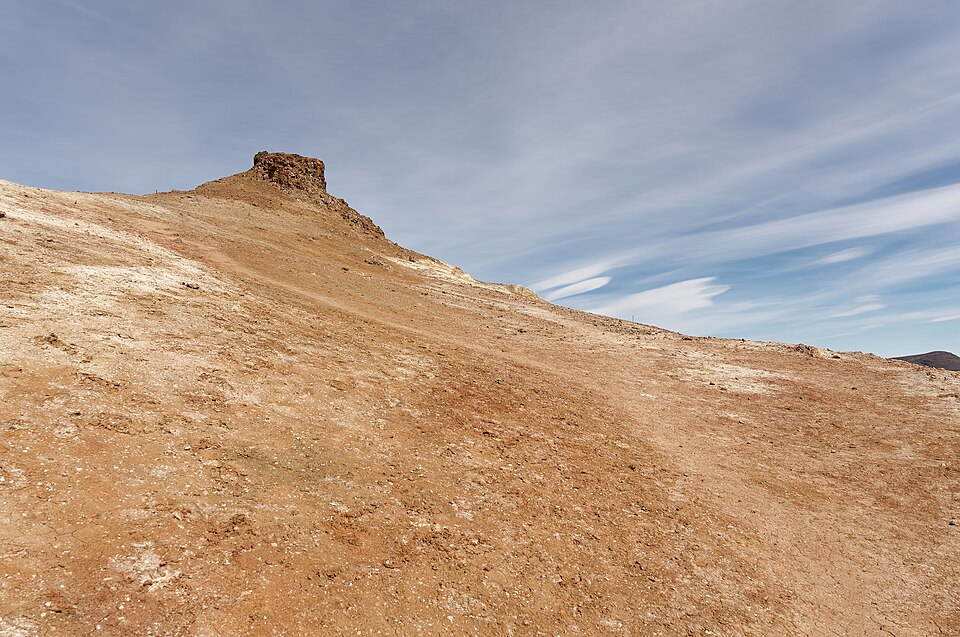

Hiking is the one hobby I have that does not involve a screen. What got me into it was realizing how much good trail there is within two hours of Sacramento. The American River Parkway is basically in the city, and the Sierra Nevada is close enough for a day trip. The part I did not expect is how much of it is just problem solving: reading a map, pacing yourself, deciding how much water is enough. My rule now is to check the conditions before I leave, usually through the Forest Service's Know Before You Go page, because the weather at the trailhead is almost never the weather at the top.
